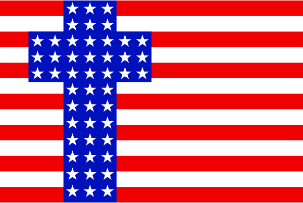

2022-04-10 08:00

Christian Nationalism has been with us almost from the founding of this country. And it has always combined the worst elements of national myth and religion.
The nation was barely a year old when the Articles of Confederation (1777) were written. A decade later the Articles were superseded by the Constitution of the United States (1787), a document drafted in secret sessions by land speculators, Federalists and creditors, and regarded by some today as somewhat of a counter-revolution.
Before ratification, the Federalists (mainly Alexander Hamilton and James Madison) sharpened their quills to sell their new form of government organization to the skeptics. Many of these documents were collected and are known as the Federalist Papers. Federal versus state rights arguments are nothing new.
No sooner was the ink dry on the Constitution than Americans lost their collective minds to the Second Great Awakening (1790-1840), another in a series of religious revivals that rejected many of the Constitution’s supposed democratic values (although not as resoundingly as the very fact of slavery).
The United States may have been born respecting the separation of Church and State, but religion had no respect for the laws of man and, almost from the beginning, began undermining secular law and government.
Barely half a century into the new experiment in government the United States was deeply divided, which led eventually to the Civil War. The South rejected even token Enlightenment values professed by Northerners and Europeans and ended up with its own concept of modernity. That modernity happened to include a romantic, chivalric, religious, deeply hierarchical and repressive culture, an agrarian economy based on slavery, with a national myth based on blood and soil. On the other side of the ocean a nationalist myth based on the same Blut und Boden was emerging in what would eventually become Germany.
Partly as a consequence of its defense of slavery but also due to growing economic and intellectual isolation, Southern Christianity soon diverged from that of Northern Presbyterian, Methodist, and Baptist churches. Because of the role imputed to Southern clergy in upholding social norms, the defense of slavery became their responsibility — one carried out with great enthusiasm and creativity. South Carolina Presbyterian minister James Henley Thornwell’s The Rights and Duties of Masters offers an example of the tortured logic found in many slavery apologetics.
As Stefan Roel Reyes points out, there were stunning similarities between the proto-fascism of post-Weimar Germany and the Confederate States of America. But there were equally stunning historical differences. In The Lost Cause Rides Again Ta-Nehisi Coates writes:
“The distinction matters. For while the Confederacy, as a political entity, was certainly defeated, and chattel slavery outlawed, the racist hierarchy which Lee and Davis sought to erect, lives on. It had to. The terms of the white South’s defeat were gentle. Having inaugurated a war which killed more Americans than all other American wars combined, the Confederacy’s leaders were back in the country’s political leadership within a decade. Within two, they had effectively retaken control of the South. […] Nazi Germany was also defeated. But while its surviving leadership was put on trial before the world, not one author of the Confederacy was convicted of treason. Nazi Foreign Minister Joachim von Ribbentrop was hanged at Nuremberg. Confederate General John B. Gordon became a senator. Germany has spent the decades since World War II in national penance for Nazi crimes. America spent the decades after the Civil War transforming Confederate crimes into virtues. It is illegal to fly the Nazi flag in Germany. The Confederate flag is enmeshed in the state flag of Mississippi.”
How the South lost the war but managed to preserve its “Lost Cause” has been a topic studied in depth. One excellent treatment is Charles Reagan Wilson’s Baptized in Blood: The Religion of the Lost Cause, 1865-1920.
The amber that preserved the Lost Cause was Southern Christianity — a vessel which preserved not only the moral fervor and anti-secularism of the old-time religion but disgust for federalism and apologetics for repression and slavery.
It should be mentioned that the North and South each developed separate national myths and flavors of Christianity. Wilson notes that a “civil religion” reflects both the political and religious views of a nation:
“A civil religion, by definition, centers on the religious implications of a nation. The Southern public faith involved a nation — a dead one, which was perhaps the unique quality of this phenomenon. One of the central issues of the [Northern] American faith has been the relationship between church and state, but since the Confederate quest for political nationhood failed, the Southern faith has been less concerned with such political issues than with the cultural question of identity. Because it emerged from a heterogeneous immigrant society, the [Northern] American civil religion was especially significant in providing uprooted immigrants with a sense of belonging. Because of its origins in Confederate defeat, the Southern civil religion offered confused and suffering Southerners a sense of meaning, an identity in a precarious but distinct culture.”
Solemn quasi-religious rituals, often relating to the military, evolved in both North and South. In the North’s case, the Union was the Cause that Won. For the South, the Confederacy was the Lost Cause.
Let us now set the calendar ahead, only a few decades from the present, when thousands of Confederate monuments were erected to preserve the honor and nobility of Confederate generals (but so did the North). Almost all were dedicated with blessings from the clergy. And when the South embarked upon an orgy of lynchings, once again, many were carried out right after church for the convenience and enjoyment of white congregants. The terror of “Christian” KKK members and lynch mobs continued through the years with the bombings of Black churches, murders of Black ministers, and cross burnings.
Some Christian Nationalists are simply opportunists (Republicans) or extremists (neo-Nazis with their Aryan “churches”). But although white Christian Nationalism hardly represents the teachings of Christianity it is nevertheless found disproportionately within the Evangelical movement that formed it — even as many Evangelicals reject it.
Take Campus Crusade for Christ (now called “Cru”) for example. The Evangelical organization realized it had a race problem and brought in diversity trainers. The pushback from Cru’s more nationalist Evangelicals was swift and angry. Similarly, the Southern Baptist Conference is now divided into religious and nationalist factions over the issue of Critical Race Theory.
But for a “pro-life” community supposedly steeped in the love of Jesus, nationalist Evangelicals are known to be more antisemitic, Islamophobic, militaristic, anti-communist, anti-feminist, pro-capitalist, pro-gun, hyper-patriotic, anti-immigrant, and pro-death penalty than the average American.
Many of today’s culture wars have been launched by these followers of Jesus. But the version of Jesus they revere is not the man of miracles and multitudes who showed compassion for a woman about to be stoned to death. For Christian Nationalists the canonical Jesus is a lamentable “woke” sissy who would turn the other cheek, look for the best in people, oppose exploitation, and feed the hungry.
Instead, the version of Jesus best represented by Evangelical opinion polls is the vengeful killer from Revelations 19:13, riding in on a war horse, robe dripping with blood, eyes blazing with fury, sword slashing, bronze boots stomping to death anyone who ever got in his way.
Anthea Butler, a Black theologian, professor, and author of “White Evangelical Racism,” described in an interview with Political Research Associates how Evangelicals became politicized by religious crusades starting in the Forties:
“As early as the 1940s, Billy Graham had fused Christianity with patriotism and White supremacy. His goal was to make believers—including Black and Brown folks who had started to listen to him—conform to White, male, Western Christian ideals. He demonized Communists, Catholics, and immigrants. Interestingly, he got support from William Randolph Hearst’s Los Angeles Examiner, which gave these ideas added prominence. […] American exceptionalism—the idea that the U.S. is blessed by God—as well as Christian patriotism were used by Billy Graham, the Rev. Bob Jones, and other White male religious leaders of the mid-20th Century to put parameters around what it meant to be an American and a Christian. It does lead directly to MAGA.”
While overt expressions of racism may be out of fashion even as the nation has begun to acknowledge its own racist institutions, nationalist Evangelicals stubbornly deny the existence of racism and actively campaign to shut down any public discussion of it:
“Even though some White evangelicals have made statements about racial reconciliation, or even ‘color blindness,’ right now they’re fussing about having to discuss critical race theory. They’re upset about the 1619 Project’s focus on the racist underpinnings of the United States. And even though Southern Baptists apologized for slavery in 1995, they have not changed any of their behaviors so you can see through their statements and conclude that they’re posturing.”
In 2010 the Institute for Research and Education on Human Rights with the assistance of the NAACP published Tea Party Nationalism. This was one of the first warnings about white supremacist, neo-Nazi, pro-KKK, and Christian Nationalist elements within several of the not-so-grassroots Republican groups. IREHR has a website that updates recent developments.
In 2011, Matt Barreto and others published The Tea Party in the Age of Obama: Mainstream Conservatism or Out-Group Anxiety? in Political Power and Social Theory. The paper made the case that the Tea Party had transitioned from pseudo-conservative to simply “paranoid,” that the movement harbored white nationalists, and that their concerns were mainly centered around changing American demographics.
In 2018 the Anti-Defamation League’s Center on Extremism published New Hate and Old: The Changing Face of American White Supremacy, which documented the rise of the Christian Identity movement, a good example of White Nationalism outside the Evangelical movement.
In February 2022 the Baptist Joint Committee for Religious Liberty (BJC) and the Freedom From Religion Foundation (FFRF) jointly published Christian Nationalism at the January 6, 2021, Insurrection. The authors described a long history of similar displays of white Christian nationalist power, starting with the 1925 KKK March in Washington, DC.
We have come a long way from antebellum Southern Christianity to the Evangelical Christianity that preserved the essence of the Lost Cause; from Billy Graham’s crusades to the Tea Party; from the emergence of white Christian Nationalism to Trump; and the metamorphosis of all this into today’s Republican Party.
And we’ve barely scratched the surface. The 1936 presidential election, for example, is worth looking at if you want to see how Christian Nationalism played out within several political parties and managed to attract real-life Nazis for the first time.
America’s illiberal impulses have had a long trajectory. It’s astonishing that the Party of Lincoln is now largely a bunch of white supremacists hiding behind a cross. But this is who they are and who we must fight.